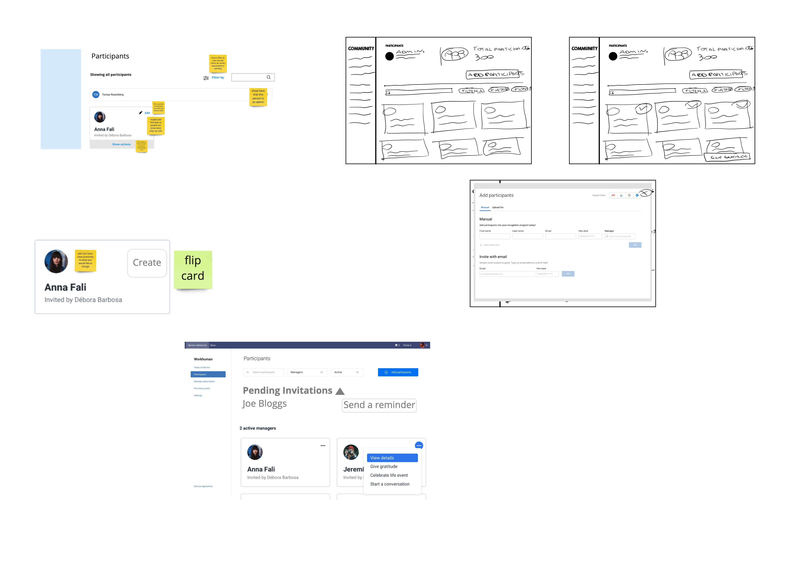
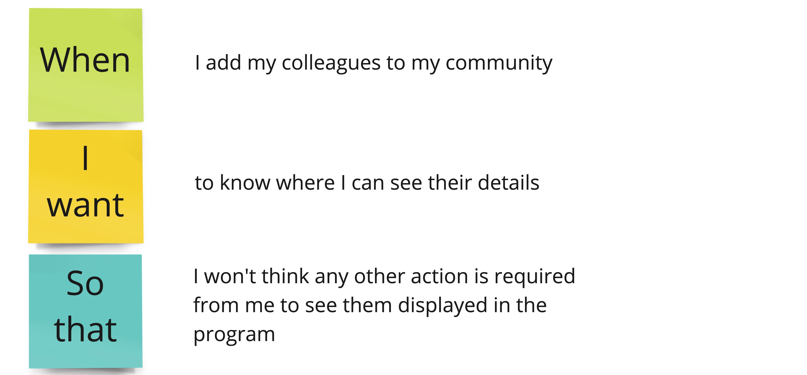
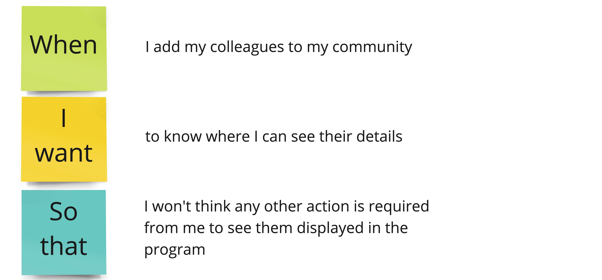
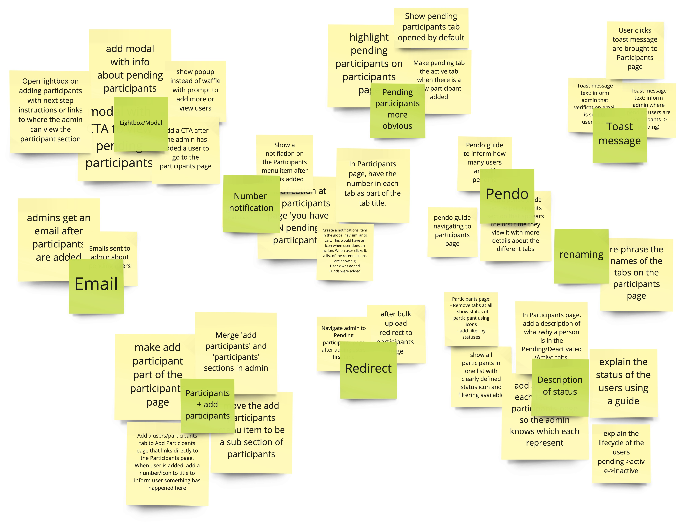
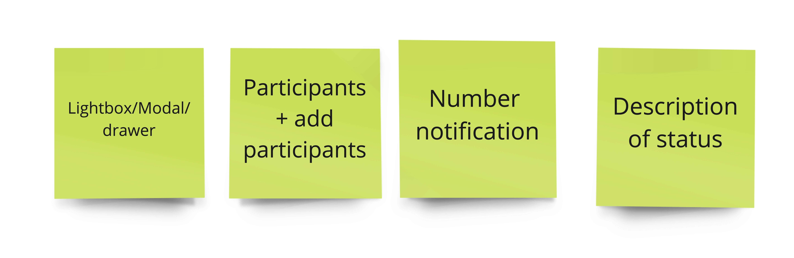
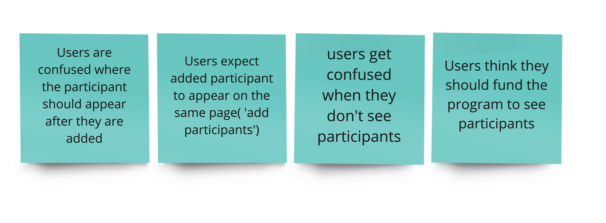
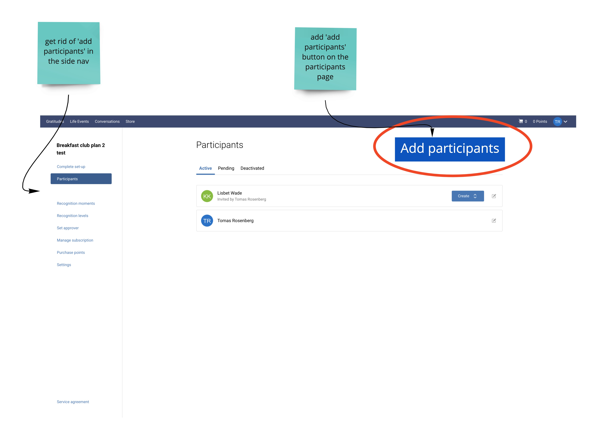
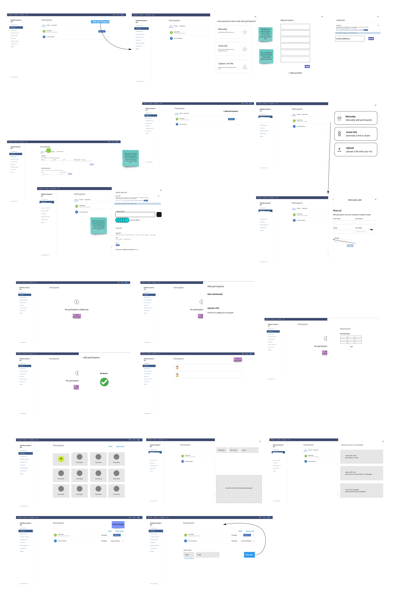
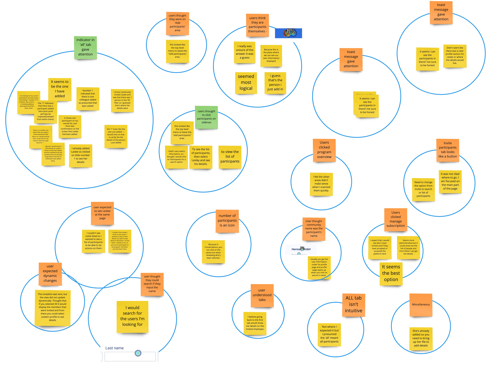
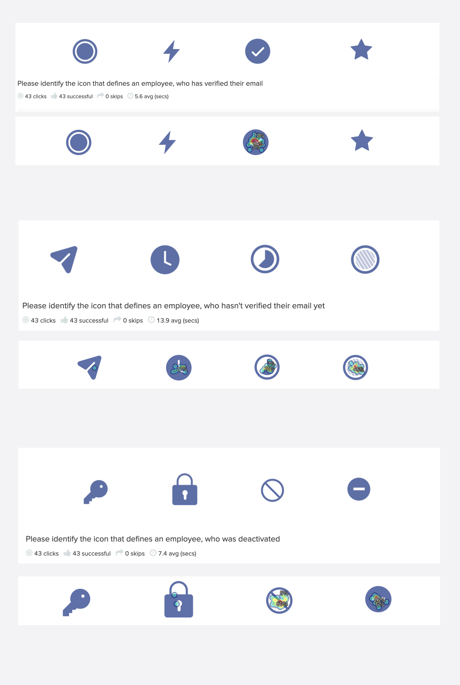

The Project
After regestering in Workhuman platform, user becomes an administrator of a newly created 'communnity' (usually created for a company). Admin is the one responsible for configuring program and populating their community. In this project I will show the work done for improving and redesigning the experience of managinng and populating communities.
Team
Associate Product Designer, Principal Product Designer
My role
Associate Product Designer, Workshops facilitator
The Problem

Participants page (from testing)
Users forget about pending participants
Users don't know how many participants they have
Outdated UI
Not mobile friendly
User expected participants to appear at the same page after they were added
User expects participant appear in 'active' participants
Users think they need to fund the program to see participants
Users are unsure what to do after adding users
Edit participants (from testing)
Struggled to find edits
Edit icon hard to see because of button
Edit icon seems more like a compase
Maybe it should be near next to the name
Approach
Workshops
1 hour ideation with designers from other product areas
1 hour workshop with the scrum team
1 hour ideation with designers from other product areas
First ideation - page layout
The team of 3 designers was introduced to the current experience annd the problems around it. Then the timer was set to 12 minutes for sketches. The goal was to put forward ideas on how the layout and structure of the page can be channged
Take away
Changing design into cards
Filtering
Search
Add participants on the same page
Number of participants
Add participants inn the drawer
Separate administrator
Workshop with the scrum team
In the beginning, the team of 6 was introduced to the problem and the experience statement - what we wanted to achieve
 

The team then was given 8 minutes to wite their ideas down on sticky notes. When the time was was up, we collected all out ideas and grouped them innto clusters by similarity.

Based on the clusters we identified 4 areas we all agreed were important to work on

After the actions were discussed, we scheduled 15 mins for next morning to look at sketches, which were supposed to be prepared in advance

Ideation with designers - add participants
The team of 5 designers was introduced to the current experience annd the problems around it. Then the timer was set to 12 minutes for sketches. The goal was to put forward ideas on how the current experience of adding participants can be redesigned.
  First ideas - first click test
Looking at the ideas that came out from workshops, we thought to try ideas, that required minimum changes in the previous experience. For the sake of experience, the decision was to try out the colours introduced by the new design system. The testers were introduced to an add participants flow (3 screens) and were asked to perform a first click test. After the test they were asked how confident they were to click on the chosen area and elaborate.

Analysis
As we saw, the testers tended to click primary call to action, instead of clicking on the 'add participants' tab. The testing had a pretty high success rate, however, after analysing, it was decided to rethink this solution.

Statuses icons testing

Designs
Tools